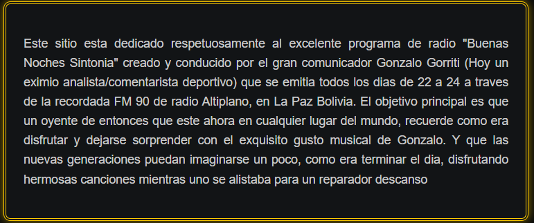
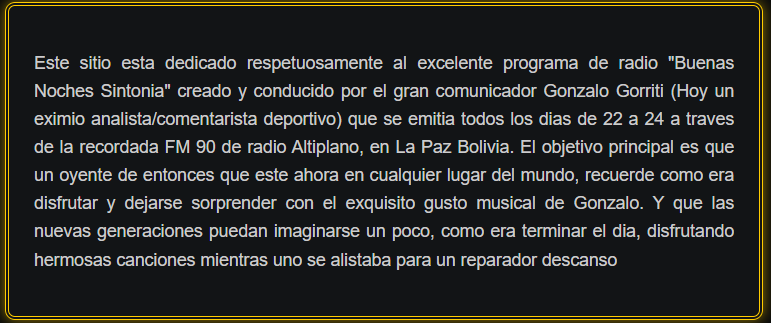

Escanea para aportar

Escanea para aportar
Este sitio esta dedicado respetuosamente al excelente programa de radio "Buenas Noches Sintonia" creado y conducido por el gran comunicador Gonzalo Gorriti (Hoy un eximio analista/comentarista deportivo) que se emitia todos los dias de 22 a 24 a traves de la recordada FM 90 de radio Altiplano, en La Paz Bolivia. El objetivo principal es que un oyente de entonces que este ahora en cualquier lugar del mundo, recuerde como era disfrutar y dejarse sorprender con el exquisito gusto musical de Gonzalo. Y que las nuevas generaciones puedan imaginarse un poco, como era terminar el dia, disfrutando hermosas canciones mientras uno se alistaba para un reparador descanso